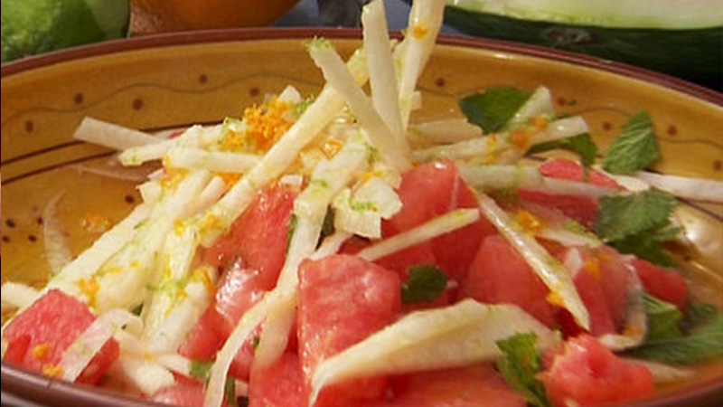

<!--
 Name:Neville Zou
 Student Id:
-->
<div class="pages">
<div data-page="projects" class="page no-toolbar no-navbar">
   <!--top header-->
      <div class="navbarpages">
         <div class="nav_left_logo"><a href="index.html"></a></div>
         <div class="nav_right_button">
		 <!--A link to Open Main Nav-->
            <a href="menu.html"></a>
			<!--A link to go back to Previous Page-->
            <a href="food-menu.html"></a>
         </div>
      </div>
	   <!--top header-->
      <div id="pages_maincontent">
         <!-- the header information of the page -->
         <h2 class="page_title">Our Recepie</h2><!-- heading tag-->
         <div class="post_single">
		 <!--Recipe Image And title-->
            <div class="featured_image">
               <!-- image tag for diplay image in browser-->
               <div class="post_title_single">
                  <h2>Jicama and watermelon salad</h2>
               </div>
               
            </div>
		<!--Recipe Image And title-->
            <div class="page_content">
			 <!--Recipe Detail-->
               <div class="entry">
                  <ul class="simple_list"><!-- unorder list-->
                     <li> 2 heads butter  lettuce</li><!-- list Element-->
                     <li> 2 oranges, peeled, segmented
                        1 piece jicama, peeled, cut into matchstick-sized pieces
                        1 wedge red seedless watermelon, peeled, cut into batons
                        12 nicoise olives, pitted, halved
                     </li>
                     <li> 2 tsps crumbled feta cheese
                        25g dried cranberries
                        25ml citrus-cumin vinaigrette
                        25g toasted sunflower seeds
                        Small handful edible flowers
                     </li>
                  </ul>
               </div>
			   <!--Recipe Detail-->
            </div>
         </div>
      </div>
   </div>
</div>